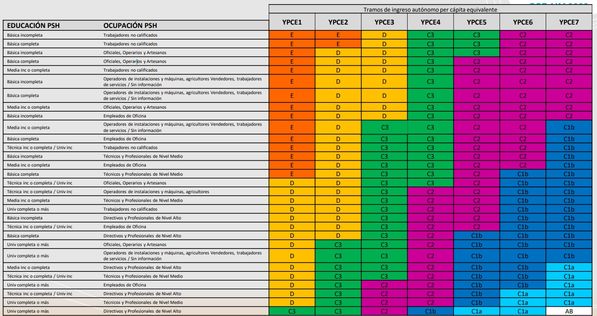
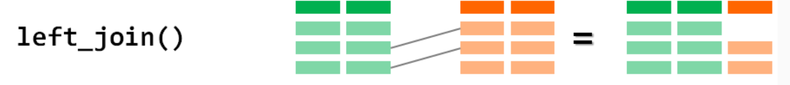
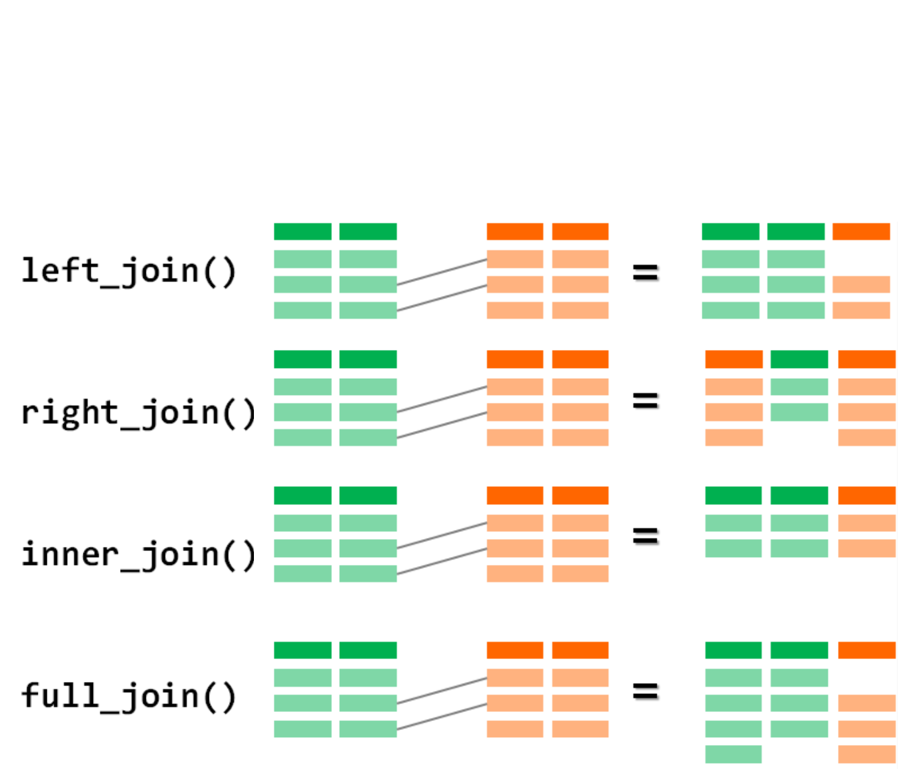

Creación, Reestructuración y Combinación de Datos
Unidad 3: Descripción y Visualización de Datos
2025-09-29
Objetivos de la Sesión de Hoy
- Aprender técnicas de recodificación de variables usando
case_when(). - Comprender y aplicar la lógica de reestructurar datos de formato ancho a largo (
pivot_longer()). - Aprender a combinar o cruzar dos tablas de datos diferentes usando
left_join(). - Distinguir conceptualmente entre la construcción de índices y tipologías.
1. Creando Nuevas Variables
Repaso y Conexión
En la clase anterior, aprendimos la “gramática” de dplyr para manipular tablas:
select()para columnas.filter()para filas.arrange()para ordenar.group_by()+summarise()para resúmenes por grupo.
Hoy nos enfocaremos en el verbo más creativo, mutate(), y en tareas más avanzadas: crear nuevas variables a partir de condiciones, cambiar la forma de nuestras tablas y unir diferentes bases de datos.
Recodificación Condicional: ifelse() vs. case_when()
Para crear variables basadas en condiciones, tenemos dos herramientas principales:
ifelse()
- Sintaxis:
ifelse(condicion, valor_si_verdadero, valor_si_falso)
- Uso ideal: Para recodificaciones binarias (dos resultados posibles).
- Ejemplo: Crear una variable “mayor de edad”.
case_when() en Acción: Creando Tramos de Edad
case_when() se lee como una serie de instrucciones lógicas. R evalúa cada condición en orden y asigna el valor de la primera que sea TRUE.
Sintaxis y Lógica:
- La
~(tilde) se lee como “entonces asigna este valor”. &significa que ambas condiciones deben ser verdaderas.TRUE ~ ...: Esta última línea es una “catch-all” o cláusula por defecto. Si ninguna de las condiciones anteriores se cumple, se asignará este valor. Es una muy buena práctica incluirla siempre.
Más Allá de la Recodificación: Creando Nuevo Conocimiento
A menudo, un solo indicador (una sola pregunta de encuesta) no es suficiente para capturar la complejidad de un concepto sociológico. Para medir fenómenos como “bienestar social”, “precariedad laboral” o “capital cultural”, necesitamos combinar múltiples indicadores.
“(…) el conjunto de herramientas metodológicas que pretenden cuantificar de modo sintético las características de fenómenos sociales complejos, no directamente observables por la vía de las estadísticas sociales tradicionalmente disponibles…” (Márquez, 2006).
En esta sección, veremos dos formas de construir estas nuevas variables compuestas: Índices y Tipologías. La herramienta principal para crearlas en R seguirá siendo mutate().
Índices: La Suma de las Partes
Un índice es una variable compuesta, generalmente numérica, que se crea a partir de la suma o promedio de varios indicadores.
- Supuesto Clave: Se asume que todos los indicadores tienen un peso similar y miden la misma dimensión subyacente.
- Ejemplo: La Escala Breve de Satisfacción con la Vida para Estudiantes (BMSLSS) mide el bienestar a través de 6 ítems en una escala de 0 a 10.
Indicadores de la BMSLSS:
1. Satisfacción con la vida familiar.
2. Satisfacción con los amigos/as.
3. Satisfacción con el barrio.
4. Satisfacción con la experiencia en el colegio.
5. Satisfacción contigo mismo/a.
6. Satisfacción con toda tu vida en general.
El índice se construye promediando las respuestas de estos 6 ítems para obtener un puntaje global de satisfacción.
Tipologías: Creando Perfiles
Una tipología es una variable categórica (nominal u ordinal) que se crea al cruzar dos o más variables para clasificar a las observaciones en “tipos” o “perfiles” cualitativamente distintos.
- Ejemplo Clásico: La clasificación de Grupos Socioeconómicos (GSE) utilizada en investigación de mercado y social en Chile. No es una sola variable, sino el resultado de cruzar tres dimensiones:
- Nivel Educacional del principal sostenedor del hogar (PSH).
- Ocupación del PSH.
- Tramos de Ingreso del hogar.

Operacionalizando una Tipología: El GSE en R
La creación de una tipología es la aplicación perfecta de case_when() con condiciones complejas unidas por el operador &. El código traduce directamente las reglas de la matriz de clasificación.
# Ejemplo conceptual para crear la variable GSE
# (suponiendo que educ_psh y ocu_psh son numéricas y están codificadas según el manual de AIM)
datos %>%
mutate(
gse = case_when(
# Condición para el grupo AB (el más alto)
educ_psh >= 5 & ocu_psh >= 6 & tramo_ingreso == "YPCE7" ~ "AB",
# Dos ejemplos de condiciones para el grupo C1a
educ_psh >= 5 & ocu_psh >= 5 & tramo_ingreso == "YPCE6" ~ "C1a",
educ_psh == 4 & ocu_psh >= 6 & tramo_ingreso == "YPCE7" ~ "C1a",
# ... (y así sucesivamente para todas las demás combinaciones de la matriz)...
# Una regla por defecto para los casos que no calcen en ninguna categoría
TRUE ~ "Sin clasificación"
)
)2. Reestructurando Datos con tidyr
El Problema de los Datos “Anchos” (Wide)
A veces, los datos no vienen en formato “ordenado” (tidy). Un problema común es el formato ancho, donde los valores de una misma variable se distribuyen en múltiples columnas.
Ejemplo: Datos de panel sobre satisfacción con la vida.
| id | satisfaccion_2020 | satisfaccion_2021 | satisfaccion_2022 |
|---|---|---|---|
| 1 | 7 | 8 | 8 |
| 2 | 5 | 5 | 6 |
| 3 | 9 | 8 | 7 |
Problema: Este formato es difícil de analizar. No podemos, por ejemplo, calcular fácilmente la satisfacción promedio por año o graficar la evolución en el tiempo. “Año” está atrapado en los nombres de las columnas.
La Solución: pivot_longer()
El paquete tidyr (parte del Tidyverse) nos permite reestructurar datos. La función pivot_longer() convierte los datos de formato ancho a largo (formato tidy).
Lógica: “Toma estas columnas, y pon sus nombres en una nueva columna y sus valores en otra”.
Sintaxis: datos %>% pivot_longer(cols = columnas_a_unir, names_to = "nombre_nueva_col_categoria", values_to = "nombre_nueva_col_valor")
pivot_longer() en Acción: El Resultado
La tabla se transforma, y ahora sí está en formato ordenado (tidy).
Tabla Original (Ancha):
| id | satisfaccion_2020 | satisfaccion_2021 | satisfaccion_2022 |
|---|---|---|---|
| 1 | 7 | 8 | 8 |
| 2 | 5 | 5 | 6 |
pivot_longer() en Acción: El Resultado
Tabla Transformada (Larga):
| id | año | satisfaccion |
|---|---|---|
| 1 | satisfaccion_2020 | 7 |
| 1 | satisfaccion_2021 | 8 |
| 1 | satisfaccion_2022 | 8 |
| 2 | satisfaccion_2020 | 5 |
| 2 | satisfaccion_2021 | 5 |
Ahora, “año” y “satisfacción” son variables en sus propias columnas, lo que facilita enormemente el análisis (ej. group_by(año) %>% summarise(...)) y la visualización.
3. Combinando Tablas de Datos con dplyr
La Necesidad de Unir Datos
Rara vez toda la información que necesitamos está en una sola tabla. En la investigación real, es muy común tener que combinar o cruzar diferentes fuentes de datos.
Ejemplos sociológicos:
- Unir una encuesta de personas con una base de datos de características de sus comunas (ej. tasa de pobreza, nivel de delincuencia).
- Unir distintos cuestionarios de un misma encuesta por ej. el ceustionario al NNA y el cuestionario al Responsable Principal del nna.
- Cruzar una encuesta de hogares con una base de datos de personas para asignar las características del hogar a cada miembro.
- Combinar dos rondas de una encuesta de panel para analizar cambios en el tiempo.
La Clave de la Unión: La “Llave” (key)
Para que R sepa cómo conectar las filas de dos tablas, necesita una (o más) variables “llave” (key).
- Definición: Una variable llave es un identificador único que existe en ambas tablas de datos.
- Su función es decirle a R: “Esta fila de la tabla A corresponde a esta otra fila de la tabla B”.
Ejemplos de llaves:
folio: Para unir personas con sus hogares.
id_comuna: Para unir datos de encuestas con datos comunales.
RUT: Para unir registros administrativos de una misma persona.
La calidad de la unión depende de la calidad de la llave.
left_join(): La Unión más Común
Las funciones _join() de dplyr nos permiten combinar tablas. La más utilizada es left_join().
Lógica: “Toma todas las filas de la tabla de la izquierda (x) y pégale la información de la tabla de la derecha (y) que coincida según la llave”.
Sintaxis: left_join(tabla_izquierda, tabla_derecha, by = "nombre_variable_llave")

- Si una fila en la tabla izquierda no tiene correspondencia en la derecha, las nuevas columnas se rellenarán con
NA.
- Si una fila en la tabla derecha no tiene correspondencia en la izquierda, se descarta.
Otros joins
dplyr ofrece una familia completa de joins para diferentes necesidades.
inner_join(x, y): Se queda únicamente con las filas que tienen correspondencia en ambas tablas. Es útil para “limpiar” datos y trabajar solo con los casos completos.full_join(x, y): Se queda con todas las filas de ambas tablas, rellenando conNAdonde no hay correspondencia.anti_join(x, y): Una herramienta de diagnóstico muy poderosa. Devuelve todas las filas de la tabla izquierda que NO tienen correspondencia en la tabla derecha. Es ideal para encontrar problemas de codificación en las llaves.

Cierre y Próximos Pasos
Resumen de la sesión de hoy:
- Hemos aprendido a realizar recodificaciones complejas de forma legible y segura con
case_when(). - Entendimos la lógica de los datos “anchos” y “largos” y aprendimos a reestructurarlos con
pivot_longer(). - Descubrimos cómo combinar diferentes bases de datos usando la poderosa familia de funciones
_join(). - Con estas herramientas, hemos completado nuestro kit básico para la limpieza y preparación de datos.
En el práctico de hoy:
- Aplicarán estas tres técnicas avanzadas (
case_when,pivot_longer,left_join) en ejercicios prácticos con la Encuesta ELPI 2017.
Adelanto de la Unidad 4: - ¡Ahora que tenemos los datos listos, comenzaremos a analizarlos! La próxima unidad se centrará en la Estadística Descriptiva Univariada.